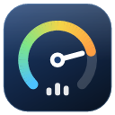
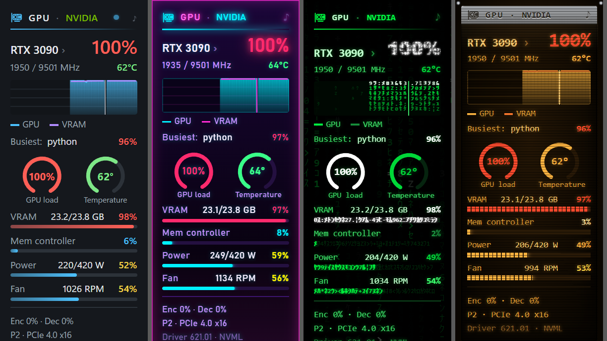
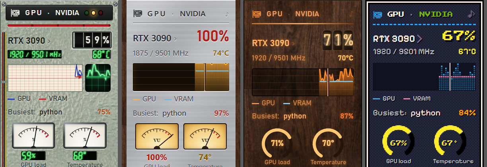
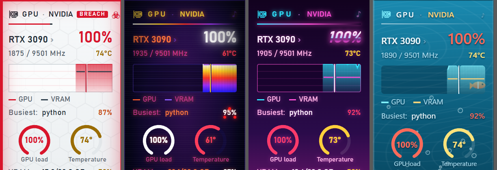
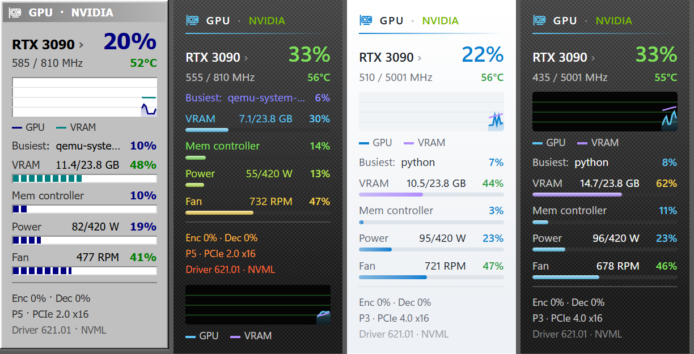
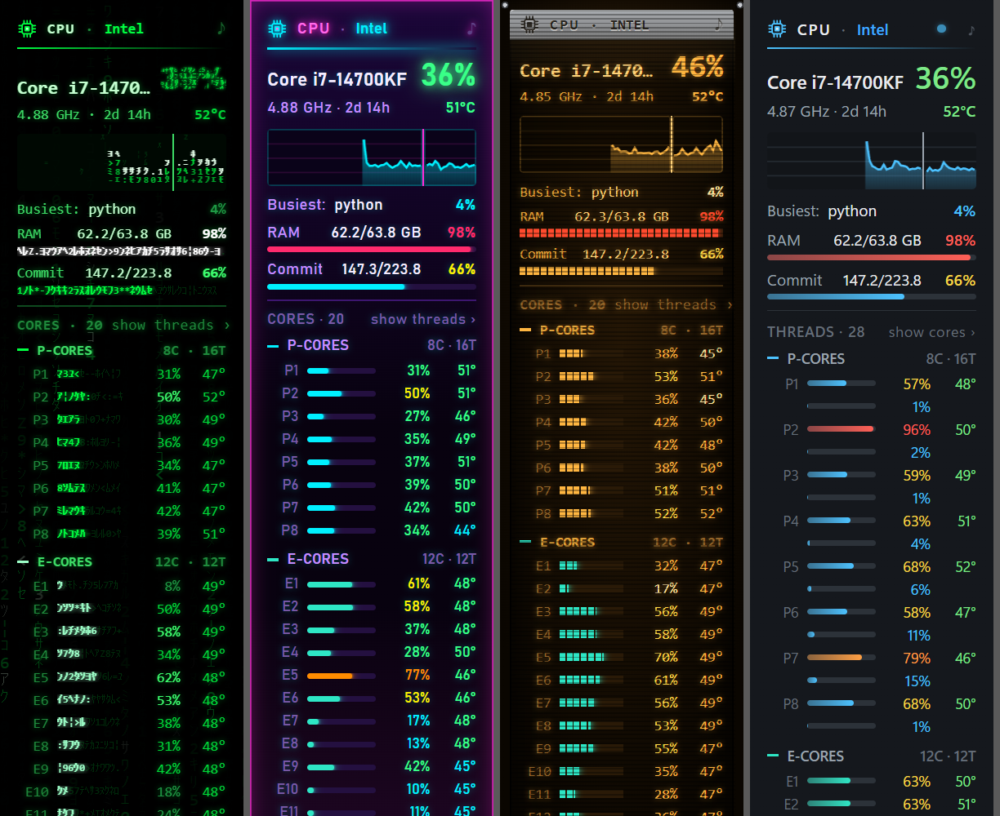

Windows 10 & 11 · Beta 0.9
Modern Meters
CPU, GPU, Network, Drives and Weather gadgets for Windows 10 and 11, each in its own small window on the desktop. No 8GadgetPack needed.
- CPU & GPU
- Network
- Drives
- Weather
- 61 styles
- 13 languages
The zip: Windows 10 or 11, 64-bit. Unpack it anywhere and run ModernMeters.exe.




A live zone
At the right of every graph the last seconds are drawn five times a second, so short spikes show at once.
Alarms
A sound when the processor or graphics card overheats, video memory is nearly full or the connection drops.
Always in place
The gadgets line up along the right edge by themselves and stay on the desktop when you press Show desktop.
The gadgets
Five gadgets, everything at a glance
CPU
Total load and its graph, clock, uptime, memory, every core (P- and E-cores apart) or every thread, temperatures (Core Temp fetched in two clicks), the five busiest programs a click away.
GPU
Load and temperature rings, video memory, memory controller, power, fan, clocks, temperature, encoder and decoder, PCIe link; NVIDIA read directly, others through DirectX.
Network
Download and upload with a graph, Wi-Fi and signal, addresses (hidden until clicked), firewall, link, ping, traffic totals.
Drives
Every disk with its partitions, health, SSD life left, temperature, read and write speed.
Weather
Now, the next hours as a chart, rain in the next two hours, a rain map for the next 12 hours, three days, sunrise and sunset, UV and air quality (MET Norway; Copernicus over Europe).

CPU Meter in Digital rain, Neon 77, Atompunk and Dark.
Styles
61 styles, each with a touch of its own
- Liquida thick slab of glass over your wallpaper, bending it at the edges; ripples run from the mouse
- Glass, Colored glass, Airthe wallpaper shows through, as sharp or blurred as you set; a glint, a breathing rim, drifting light streaks
- Dark, Lightan activity light flares with each update; big numbers count to their new value
- Carbon, Rainbowa lacquer gleam runs along the bars; every row in its own color, flowing
- Retro terminalthe cursor erases the title and types it again; the graph's beam glows like an oscilloscope's
- More terminalsaubergine with a shell prompt, monochrome switching on like an old tube, blue commander with a selection bar
- Digital raincode rains behind the meters; graphs, bars and big numbers are made of falling glyphs
- Neon 77cyan and magenta glowing, the title flickers like a sign
- Atompunk, Bunkera green wrist screen in an olive casing; a gunmetal instrument with an amber tube that warms up
- Reactora control desk: drum counters that roll, a chart recorder, an oscilloscope, status lamps and an emergency stop under a flip cover
- Hi-Fi 70s, Brasslevel meters whose needles swing past and settle; gears turning with the load, steam at an overload
- LCD, Glow tubes, Mission controlseven segments with their ghosts; digits in glass tubes rolling through their cathodes; green segments behind black glass
- Blueprint, E-paper, Chalkboardhatched lines drawn in; dithered grays and a full refresh flash; chalk and a duster
- 8-bit, BIOS, Videotape, Synthwavepixel type and a coin; a memory test on start; PLAY and rewind; a sun behind a running grid
- Swarm, Biomech, Thermal visionliving tissue with eggs that hatch; a nest's walls with a motion tracker; a sight locking on the hottest value
- Psionic, Frontier, Biolab, Backup powera shield rippling where clicked; a console booting up; a breach alert; breakers powering the gadget up part by part
- Sonar, Aquarium, Dunesa sweep and a ping; a tank of fish you can feed; everything pressed into rippled sand
- Hacker, Stone agegreen code scrolling faster as you type; carved stone with ochre, chips flying, a mammoth passing
- Fog town, Undersidefog and ash drifting over the meters, a radio that crackles under load; Christmas lights and spores, and another world a double click away
- Orbital stationevery gadget a module of a space station: a white cylinder with solar wings, radiators, an antenna, a docking hatch or a cupola on top, and the Earth's horizon in its windows
- Forest, Sunset, Oceanfirs at night under a moon, mist and fireflies; the sky over the sea as your clock has it; deep water, waves rising with the load
- Wood, Marble, Leatherpolished walnut with burned-in letters; white marble, numbers in gold leaf; tan hide with a stitched seam
- Notebook, Watercolor, Comic, Kawaiia squared school page in blue ballpoint; washes of paint bleeding into paper; halftone dots and a POW!; pastel polka dots, candy-striped bars and a little cat
- Coffee, Midnight, Mint, Glamdark roast with steam when it runs hot; deep blue with stars and a meteor now and then; fresh green; hot pink with glitter
- Hologram, Tactical glasssee-through too: a blue projection with interference and a projector's cone; dark amber cockpit glass
- Gray 90sbeveled gray, segmented bars, the title bar lights up while the mouse is on it
Plus Auto, which follows Windows' light or dark mode, Style of the day, an accent color of your choice, and 13 languages. Rest the mouse on a style in the menu to try it on; three clicks on a gadget's title find most styles' easter eggs.
Free in the zip: Auto, Style of the day, Dark, Light, Glass, Neon 77 and the retro terminal.
All the others come with Modern Meters from the Microsoft Store, in packs or all at once with Premium. Rest the mouse on one in the menu to try it on.
Reactor, Hi-Fi 70s, Glow tubes and 8-bit.
Swarm, Thermal vision, Synthwave and Aquarium.
Monochrome terminal, Rainbow, Gray 90s and Light.
Good to know
Install, updates, privacy
Install
- Download
ModernMeters-…-win-x64.zipfrom the latest release. - Unpack it into a folder of your choice and run
ModernMeters.exe. The first start lines the gadgets up and asks whether to start with Windows. - If Windows says "Windows protected your PC", click More info → Run anyway, as for any new program that isn't signed yet.
Everything is in the menu of the tray icon by the clock: gadgets, line them up, style, accent color, glass transparency, language, always on top, animations, start with Windows. Drag a gadget by its title; ⚙ and ✕ appear under the mouse.
New versions
Once a day the app looks for a new version. It shows as a small ↑ on the gadgets' titles. In the copy from the Microsoft Store a click installs it, and the app starts again by itself; in the copy from here a click opens its page to download it.
Privacy
No tracking. The app connects to MET Norway for the weather, livonianlabs.github.io for air quality, OpenStreetMap for place names, api.ipify.org for your external IP, 1.1.1.1 for the ping, alcpu.com for Core Temp when you ask for it, and GitHub (the Store copy: the Microsoft Store) for the check for a new version. The glass styles read your wallpaper to draw it; it stays on your computer, as do the settings.
Support
Say hello
Questions, ideas or bugs: open an issue. If you like it, you can buy us a coffee on Ko-fi. Using the Windows Sidebar? The same gadgets exist for 8GadgetPack, free and open source.